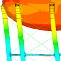
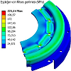
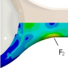
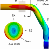
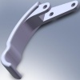
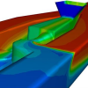
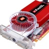

|
|
| Rapor - Makale
> CAD/CAM/CAE: |
KediCAD’de FEA uygulamasý:
Abdurrahman Ulusoy, Ulusoy Mekatronik, Kasým 2012, Ýstanbul
KediCAD, 2 boyutlu sonlu eleman analizi de yapabilmektedir. Çizim alanýna çizilen kapalý bir çizim için gereken kalýnlýk, malzeme, analiz yöntemi vb. bilgileri alarak Z88 yazýlýmý temelinde çözümlemektedir... |
 |
EUNCAP whiplash (travma) testlerine uygun, düþük maliyetli koltuk iskeleti ve baþlýk geliþtirilmesi:
Murat Dal, Aralýk 2012, MARTUR Automotive Seating Systems
Whiplash simülasyonlarý, diðer çarpýþma simülasyonlarýna göre daha uzmanlýk isteyen ve altyapýsý (FE mankeni ve donaným) daha kapasiteli olmasý gereken simülasyonlardýr. FE modelindeki en küçük ayrýntýlar bile sonuçlar üzerinde etkili olmaktadýr... |
 |
Plastik enjeksiyon kalýp tasarýmýnda analiz yazýlýmlarýnýn yeri:
Ýlyaz Ýdrizoglu, Makine Yüksek Mühendisi, Þubat 2010, Bursa
Bu çalýþmada, "Moldflow" analiz yazýlýmý ile seçilen bir plastik parçaya hangi analizlerin yapýlabileceðini ve elde edilen sonuçlarýn neler olduðunu açýklamak hedeflenmiþtir... |
 |
Bilgisayar destekli mühendislik (CAE) analizleri ile iyi tasarým ve üretim:
Ali Cantaþ, MESH Mühendislik ve Yazýlým A.Þ., Aralýk 2010, Ýstanbul
Mühendislik analizleri kullanarak ürünleri daha kolay imal edilen, daha uzun ömürlü, daha az arýza yapan, arýzalarý daha kýsa sürede giderilen, daha düþük maliyetli, daha ergonomik ve kolay kullanýlan, daha çevreci ve yalýn hale getirmek mümkündür... |
 |
Simülasyon uygulamlarý için uygun donaným seçimi:
Eyüp Öztürk, Egemen Bilgisayar Ltd. Þti., Aralýk 2010, Ýstanbul
Eðer tasarýmcý iseniz, her programýn her bilgisayarda çalýþmayacaðýný bilmeli, programlarý layýðý ile kullanmak için farklý özellikler gerektiðini hatýrlamalý ve hatýrlatmalýsýnýz... |
 |
CAD kullanýcýlarý için, 3D farelerin ekonomik geri ödemesi:
Taner Deniz, 3Dconnexion - A Logitech Company, Ocak 2010, Polonya
CAD tasarým mühendislerinin %84'ten fazlasý, 3D mouse kullanýmýnýn sonucu olarak, ürün tasarýmlarýnda ya da tasarýmdaki hata tespitlerinde önemli ya da belirgin bir geliþme rapor etti. 3D mouse kullanan CAD kullanýcýlarýnýn rapor ettiði ortalama verimlilik artýþý %21... |
 |
Taþýt kavramasý kapaðýnda pedal kuvveti altýnda oluþan elastik þekil deðiþiminin sonlu elemanlar yöntemiyle belirlenmesi:
M. Murat Topaç, N. Sefa Kuralay, Yetkin Hamuriþçi, Dokuz Eylül Üniv., Ýzmir
Bu çalýþmada, tasarým aþamasýndaki bir kamyon kavramasýnda kullanýlmasý düþünülen kavrama kapaðýnýn yapýsal analizi gerçekleþtirilmiþ, öngörülen azami elastik þekil deðiþimi kriteri göz önünde bulundurularak, kavrama kapaðýnýn fonksiyona uygunluðu deðerlendirilmiþtir... |
 |
Kamyon arka aks gövdesinde oluþan yorulma hasarýnýn sonlu elemanlar yöntemiyle incelenmesi:
M. Murat Topaç, N. Sefa Kuralay, Dokuz Eylül Üniv. Makine Müh. Böl., Ýzmir - Hasan Günal Ege Endüstri A.Þ., Ýzmir
Bu çalýþmada, test ve analizlerden elde edilen sonuçlar karþýlaþtýrýlmýþ, gövdenin yorulma ömrünün arttýrýlmasý için tasarým önerilerinde bulunulmuþtur... |
 |
Yolcu otobüsü stabilizatörünün bilgisayar destekli tasarýmý:
M. Murat Topaç, N. Sefa Kuralay, Dokuz Eylül Üniv. Makine Müh. Böl., Ýzmir
Bu çalýþmada, aðýr taþýtlarda, gövdenin yalpa eðilimini sýnýrlandýrmak amacýyla, süspansiyon sisteminde kullanýlmasý gereken stabilizatörün çapýný belirlemede uygulanabilecek pratik bir yöntem açýklanmýþtýr... |
 |
Neden deðiþim? Neden 3 boyutlu tasarým?
Onur Gölbaþý, CAD/CAM Mühendisi, MechSoft, Haziran 2009, Ankara
3D Modelleme, ileri montaj özelliði saðlamasýnýn yaný sýra, montajda kullanýlacak yüzlerce parçayý ayrý ayrý sýnýflayarak, yapýlacak üretime tüm detaylarýyla hakim olmanýzý kolaylaþtýrýr... |
 |
Dijital fabrika ile etkin tesislerin kurulmasý:
Tolga Yanaþýk Dijitalis Ltd. Þti. Þubat 2009, Ýstanbul
Fabrika ortamý, deneysel çalýþmalar yapmak için çok pahalý bir ortamdýr ve üretim zamaný boþa harcanmayacak kadar deðerlidir... Sadece Almanya'da dijital fabrika simülasyon sayesinde yýlda 9 milyar EURO tasarruf edilmekte... |
 |
Pompa tasarýmýnda hesaplamalý akýþkanlar dinamiðinin kullanýmý ve uygulamalarý:
Onur Özgen, Onur Konuralp, Kayhan Cengiz - Layne-Bowler Pompa Sanayi A.Þ.
Prof. Dr. Kahraman Albayrak - ODTÜ
CFD (Computational Fluid Dynamics - Hesaplamalý Akýþkanlar Dinamiði) yazýlýmlarýnýn uygun CAD/CAM sistemleri ile birlikte kullanýlmasý son ürüne giden yolda maliyetleri düþürmekte, tasarýmýn güvenilirliðini arttýrmaktadýr... |
|
Plastik enjeksiyon simülasyonu:
Ahmet Barýþ Kuldaþlý, CAD/CAM/CAE Müh., UMTAÞ A.Þ., Kasým 2005, Ýstanbul
Parça tasarýmý sýrasýnda analiz programlarýnýn kullanýmý imalat aþamasýna geçildiðinde çýkabilecek sorunlarýn ortadan kalkmasýný saðlar. Tespit edilebilecek bu hatalarýn büyük bir çoðunluðu hacimsel kökenlidir ve parça tasarýmýnda küçük deðiþiklikler yapýlarak giderilebilir... |
 |
Bir araç iç kapý kolunun ürün geliþtirme uygulamasý:
Mümin Tutar, Aralýk 2008, Bursa
Bu çalýþmada; öncelikle CAD yazýlýmlarý ile araçlar için ergonomik iç kapý kolu modeli tasarlanmýþ ve tasarlanan model CAM yazýlýmlarýna aktarýlmýþ, ardýndan da CAM yazýlýmlarýnda takým yollarý oluþturularak simülasyonla doðrulanmýþ ve CNC freze tezgahýnda modelin üretimi yapýlmýþtýr... |
 |
CATIA V5 ile sanal ürün geliþtirme:
Sezer Cindemir, Mühendislik Müdürlüðü, ANADOLU ISUZU Otomotiv San. ve Tic. A.Þ.
CATIA V5, sanal olarak yeni otobüs ve otobüse ait alt sistemlerin bilgisayar ortamýnda üç boyutta modellenmesi, bu alt sistemlerin çeþitli tipte analizlerinin yapýlmasý ile birlikte sanal otobüs prototipinin bilgisayarda oluþturulmasýna yardýmcý olmaktadýr... |
 |
LS-DYNA ile ECE-R66 Yönetmeliði'ne uygun otobüs devrilme analizi:
Kadir Elitok, Dr. M. Ali Güler, Fatih Han Avcý Ürün Geliþtirme Bölümü., TEMSA A.Þ., Adana
Dr. Ulrich Stelzmann LS-DYNA Services, CADFEM GmbH, Almanya
Bu çalýþmada, TEMSA HD SAFARI otobüsünün ECE-R66 analizleri ve sertifikasyon süreci irdelenmiþtir... |
|
Perçin sistemlerinin parametrik tasarým programlarý yardýmý ile bilgisayar ortamýna tanýmlanmasý ve kuvvet analizi yapýlmasý:
Mustafa Kemal Külekçi, Murat Demirel, Mersin Üniv. Tarsus T.E.F., Makine Eð. Böl.
Bu çalýþmada, AutoLISP programlama dili yardýmýyla perçinle birleþtirilen plaka sistemlerinin kuvvet gerilmelerinin analizi yapýlmýþtýr... |
|
CNC kod standartlarý ve CAD/CAM-CNC entegrasyonunda yeni yaklaþýmlar:
Levent Yaðmur, Mak. Y. Müh., Ekim 2005, Ýstanbul
Son yýllarda CAD/CAM-CNC entegrasyonu üzerine yeni çalýþmalar üzerine çalýþmalar yapýlmýþ, daha uygun standartlar kurulmaya çalýþmýþtýr... |
 |
CAD/CAM ve hýzlý prototip imalat sistemlerinin kuyumculuk sektöründeki yeri ve kullaným alanlarý:
Ozan Batýr, Lisanslý Ürünler Tasarým Sorumlusu, GOLDAÞ Kuyumculuk, Ekim 2005, Ýstanbul
Yeni teknolojiler tasarýmcýlara yeni ufuklar açmaya devam ediyor. Artýk tasarýmcýlar, "üretilemez" denen ürünleri tasarlayýp üretiyor, gittikçe "akýllý ürün" hedefine yaklaþýlýyor... |
 |
Metro tünellerinde yangýn senaryosu analizleri:
Ahmet Açýkgöz, Mustafa Ö. Geliþli, Emre Öztürk - ANOVA Mühendislik, Ekim 2006, Ýstanbul
3 boyutlu hesaplamalý akýþkanlar dinamiði metotlarý, tünel havalandýrma sistemlerinin yangýn gibi kaza senaryolarýnýn oluþmasý durumunda nasýl çalýþacaðý ve sýkýntýlý çalýþan bölgelerin tespitinde ve iyileþtirilmesinde kullanýlabilir... |
 |
Otomobil gövde sýzdýrmazlýk elemaný tasarýmýnda sonlu elemanlar analiz yönteminin kullanýlmasý:
Dr. Tuncay Yüksel, FEA Uygulama Sorumlusu, Standard Profil A.Þ., Düzce, Ekim 2005
Bu çalýþmada, Otomobil gövde sýzdýrmazlýk elemaný tasarýmýnda Sonlu Elemanlar Analiz (FEA) Yönteminin kullanýmý örnek çalýþmalarla anlatýlmaya çalýþýlmýþtýr. Fitiller, araç sürüþ konforu açýsýndan, özellikle araç içi ses seviyesini etkileyen en önemli parçalardan birisidir... |
 |
Otomotiv endüstrisinde hesaplamalý akýþkanlar dinamiði uygulamalarý:
Ahmet Açýkgöz, Mustafa Ö. Geliþli, Emre Öztürk - ANOVA Mühendislik, Ekim 2006, Ýstanbul
Hesaplamalý Akýþkanlar Dinamiði (HAD) ve diðer CAD/CAM tasarým teknikleri 1980'li yýllarda doðdu ve hýzlý bir þekilde otomotiv firmalarý tarafýnda kullanýlmaya baþlandý. Günümüzde dünya çapýndaki bir çok otomotiv firmasýnda ve bu firmalarýn yan sanayinde HAD yöntemleri tasarým sürecinin bütünleþik bir parçasý olan bir tasarým aracý olarak kullanýlmaktadýr... |
|
Radyatör fan tasarýmý:
Ahmet Açýkgöz, Mustafa Ö. Geliþli, Emre Öztürk - ANOVA Mühendislik, 2006, Ýstanbul
Fan tasarýmý yapabilmek için fanýn basma yüksekliði, debi ve devir bilgisine ihtiyaç vardýr. Bu parametreler fanýn çalýþacaðý ortam düþünülerek çýkarýlmasý gerekir. Fanýn basma yüksekliði fanýn çalýþacaðý sistem içerisinde, çalýþma debisindeki statik basýnç kayýplarýnýn tümüdür... |
|
RIVAGE konsept otomobil tasarým ve geliþtirme aþamalarý:
Bu çalýþmada amaç, Porsche Carrera 911 modeli klasik otomobil için yeni bir kabuk tasarlanýp imal edilmesidir. Modern 3D tarama ve CAD/CAM araçlarýnýn yerinde kullanýmý ve yardýmý sayesinde, yeni tasarýmýn eski iskelet ile hatasýz þekilde uyumlu olabilmesi saðlanmýþ ve tüm proje, sadece 7 ay gibi kýsa bir sürede bitirilebilmiþtir... |
 |
Bilgisayar destekli tasarým ve imalat (CAD/CAM) nasýl baþladý ve geliþti?
Prof. Dr. Bilgin Kaftanoðlu, Makine Müh. Böl., ODTÜ, Ekim 2005, Ankara
1960 yýlýnda insan-bilgisayar iletiþiminin sadece delikli kaðýt ve þeritle sýnýrlý kalmasý ve etkileþimli olmayýþý birçok araþtýrmacý ve tasarýmcýyý düþündürdü ve yeni arayýþlara yöneltti. Ýstenilen, insanýn sahip olduðu beþ duyuyu da bu iletiþimde teknolojinin elverdiði ölçüde etkileþimli olarak kullanmasý idi... |
|
Ürün tasarým ve ergonomisine, tasarým kriterleri etkisinin CAD/CAM/CAE ortamýnda incelenmesi:
Selim Koca, Gazi Üniv. Kalýpçýlýk Öðretmenliði, Nisan 2007, Ankara
Bu makalede, bir TV uzaktan kumanda tasarýmýný etkileyen prensipler elektronik elemanlar göz önünde bulundurulmaksýzýn tasarým kriterleri çerçevesinde CAD/CAM/CAE ortamýnda iki farklý ürün üzerinde tartýþýlmaktadýr... |
|
Micromilling (mikro frezeleme) için CAD/CAM uygulamalarý:
Çeviri: Ahmet Barýþ Kuldaþlý, UMTAÞ A.Þ. Þubat 2006, Ýstanbul
Minyatür kalýp ve mikro parçalarý iþlemek için kullanýlan takým, kesici uç ve fikstürleri tasarlamada karþýlaþýlan sorunlar oldukça yýldýrýcýdýr. Ayný durum bir tezgah operatörünün kesim iþlemini göremeyeceði ya da duyamayacaðý bir durumda takým yollarýný optimize etmesinde de geçerlidir... |
|
CAD/CAM Yazýlýmlarý 2005 Raporu:
Tooling & Production Dergisi, Kasým 2005 (Tercüme: Levent Yaðmur)
Bugün CAM yazýlýmlarýnda meydana gelen en büyük deðiþimler ve trendler (eðilimler) nelerdir? En son çýkan yazýlýmlarda ve çýkmasý planlanan yazýlýmlardaki yeni özellik ve fonksiyonellikler kullanýcý ihtiyaçlarýna nasýl cevap verecektir?.. |
|
GATA Diþ Hekimliði'nde, 3B yazýcýlarla elde edilen medikal modeller yardýmýyla teþhis, taný ve tedavi uygulamalarý:
Kutsal Tuaç, 4C Medikal Ltd. Þti., Mart 2006, Ýstanbul
3 Boyutlu Katý Modeller hali hazýrda diþhekimliðinde taný, tedavi planýnýn oluþturulmasýnda kullanýlabilecek ve hekime doðru planlamada yardýmcý olabilecek hata payý çok aza indirilmiþ olan görsel, üç boyutlu araçlardýr... |
|
Ürün Bilgi Yönetimi (PDM) nedir?
Kadir Özdemir, CPV Bilgi Teknolojileri Ltd. Þti., Kasým 2007, Ýstanbul
PDM sistemleri tasarým geometrisi, teknik resimler, proje planlarý, parça dosyalarý, montaj diyagramlarý, ürün özellikleri, NC programlama, takým bilgileri, FEM analizleri ve malzeme listeleri gibi ürün hakkýnda birçok özelliði içine alýr...
|
|
Bir ticari araç yolcu çerçevesinin sonlu elemanlar yöntemiyle analizi:
Ramazan Uçar, Levent Garip, Hakan Ayhan, Canel Otomotiv A.Þ. Þubat 2006, Ýstanbul
Firmamýz genellikle alüminyum ekstrüzyon profilleriyle çerçeve tasarýmlarýný gerçekleþtirmektedir. Yaptýðý bir çerçeve tasarýmýnda genel tasarýmlardan farklý olarak alüminyum ekstrüzyon profili yerine poliüretan esaslý ürün tasarlamýþ ve ABD, AB ve Türkiye'de patent alýnmýþtýr...
|
|
Profesyonel 3D Grafik Hýzlandýrýcýlarýn Dünü ve Bugünü:
Dr. Ing. Tayfun Erkeskin, TET Ltd., Mart 2006, Ýstanbul
Elektronik ortamda veri iþleme ve üretme olanaklarý geliþtikçe ve yaygýnlaþtýkça, hesap sonuçlarýnýn görüntülenmesi, en arzulanýr operasyonlarýn baþýnda gelmiþtir. En komplike nümerik algoritmalarýn kullanýmý giderek kolaylaþýrken, üretilen sonuçlarýn... |
 |
Dies/Molds 2007 Konferansý'nda sunulmuþ bazý makaleler:
21-24 Haziran 2007 tarihlerinde Çeþme'de düzenlenen, 4th International Conference and Exhibition on Design and Production of Machines and Dies/Molds veya Türkçe adýyla 4. Uluslararasý Makina ve Kalýp/Model Tasarým ve Ýmalat Kongresi ve Sergisi'nde yapýlan sunumlara ait bazý makaleler (Ýngilizce, pdf formatýnda)... |
|
Soðuk Dövme Kalýplarýnda Gerilme Analizleri:
Canderim Önder, Norm Cývata A.Þ., Haziran 2007, Ýzmir
Sonlu eleman analizi ile dövme iþlemi sýrasýndaki kalýp gerilim daðýlýmýný görmek için, sürtünme, malzeme karakteristiði gibi parametrelerin yaný sýra, öngerilme iþleminin de doðrulukla modellenmesi gerekmektedir. Doðru bir þekilde modellenen dövme kalýp simülasyonlarý tasarýmcýlara çok önemli bilgiler vermektedir...
|
|
Alüminyum alaþýmlý otomobil jantýnýn dinamik darbe testinin modellenmesi:
Özgür Alpan, Mak. Yük. Müh., Tekno Tasarým A.Þ.,
Nisan 2007, Bursa
Bu çalýþmada, hafif alaþýmlý otomotiv jantýna, standartlara göre yapýlan darbe testinin simülasyonlarý, mühendislik yazýlýmlarý ile gerçekleþtirilmiþtir. Darbe testi, eþdeðer test þartlarý modelize edilerek non-lineer yapýsal analizi sonlu elemanlar metodu kullanýlarak yapýlmýþtýr... |
|
CAM yazýlýmlarýnda teknolojik eðilimler:
Levent Yaðmur,
Mak. Y. Müh.,
TÜBÝTAK UME,
Gebze, Kocaeli, Ocak 2006
CIMdata firmasýnýn yýllýk anketinde, CAM yazýlým tedarikçi firmalarýndan en önemli üç teknolojik eðilimi sýralamalarý istendi. Anket sonuçlarýna dayanarak, CAM yazýlýmlarý konusunda gelecekte öne çýkacak konu ve alanlar, aþaðýda önemine göre sýralanmýþtýr... |
|
Bilgisayar destekli plastik enjeksiyon kalýbý tasarýmý:
Bilen Emek Abalý, ÝTÜ Makine Müh. Böl., Þubat 2006, Ýstanbul
Bu çalýþmada, plastik enjeksiyon üretim yönteminin avantajlarý ve geliþmiþ özelliklere sahip polimer malzemelerin çeþitliliði ile ülkemizde de yaygýn mühendislik çalýþmalarýyla geliþen plastik enjeksiyon kalýbý tasarýmcýlýðýnda yeri artan bilgisayar destekli konstrüksiyonun kullanýmý ve basit bir kalýp tasarýmýnda uygulamalý örneklenmesi hedeflenmektedir... |
|
Veri ve hesaplama aðlarý üzerine (grid computing):
Dr. Erdal Yýlmaz,
IUPUI, Þubat 2006, Indianapolis-Indiana USA
Bilgisayarýn ilk icadýndan bu yana büyük ölçekli hesaplama ve veri iþlemleri için birçok strateji geliþtirildi... Son birkaç yýl içerisinde hýzlý bir geliþim seyreden Að yapýlanmasýna farklý ülkelerden ve kýtalardan pek çok örnek verilebilir. TeraGrid, 8 ayrý bilgisayar merkezin birleþtirilmesi ile oluþturulmuþ olup, toplam hesaplama gücü olarak 20 TeraFlop'ýn üzerinde bir hýz vermektedir... |
|
Bilgisayar destekli roll form makara tasarýmý; Zanaatýn teknolojiyle birleþmesi:
Doç. Dr. Haydar Livatyalý,
Makine Müh. Böl.,
ÝTÜ,
Þubat 2006,
Ýstanbul
Süratle geliþen BDT ve BDÝ (Bilgisayar Destekli Ýmalat) teknolojileri ile makara tasarýmlarý tamamen elektronik ortama taþýndý, makara imalatýnda ise sayýsal denetimli (CNC) torna ve taþlama tezgâhlarýnýn kullanýmýna geçildi. Bu durumda roll form makara tasarýmýna özel geliþtirilmiþ BDT programlarýnýn da önemi çok arttý... |
|
Ýmalat sektöründe bilgisayar destekli tasarým (CAD) eðitimi:
Cem Sarman,
Bilgisayar Eðitmeni,
MMO Ýzmir Þubesi, Þubat 2006, Ýzmir
1997 yýlýndan beri çeþitli bilgisayar programlarýnýn dersini veriyorum. Son 3 yýldýrda bazý CAD programlarýnýn eðitimini veriyorum. Bu eðitimler sýrasýnda gözlemlediðim olumlu veya olumsuz bazý konularý sizlerle paylaþmak istedim...
|
|
Ür-Ge ve Ar-Ge'de Bilgisayar Destekli Mühendislik Süreçleri
ve Firma Kültürüne Yansýmalarý:
Çaðlar Üçler, FÝGES A.Þ.,
Mart 2006, Bursa
Ürettiðimiz mamul ne olursa olsun, gerek üretim sürecini, gerekse nihai ürünün testini sanal ortama taþýmamýz sadece iþçilik zamaný ve masraflarýnýn kýsýlmasýnda deðil, ayný zamanda deneme yanýlma sürecinin bilgisayar ortamýnda olmasý sayesinde daha iyi ve daha hafif, dolayýsý ile daha problemsiz ve daha ucuz ürünlere ulaþmamýzda önemli bir rol oynamaktadýr... |
|
CATIA
VBA Uygulamalarý:
Mesut Özer, Mayýs 2006, Bursa
CATIA
içine kod yazýmýnda, kullanýcý tanýmlý formlarýnýn kullanýlabilmesi
nedeniyle VBA (Visual Basic for Applications) ya da
VB (Visual Basic) , scriptlere tercih edilir.
VBA yazýlým geliþtirme ortamý lisans gerektirmeyen bir
ortamdýr. Bununla birlikte VBA ile geliþtirdiðiniz kodlarý
derleyip (compile) "exe" dosya haline getiremezsiniz... |
|
|
SolidCAM
Ürün Ýncelemesi:
Alan
CHRISTMAN, CIMdata, Inc., Mayýs 2005
Çeviri:
Ahmet Barýþ KULDAÞLI, Övünç BÜKE, UMTAÞ A.Þ.
SolidWorks'ün
iki sertifikalý altýn ortak çözümlerinden biri olan SolidCAM,
CAM marketinde bu avantajýyla diðer yazýlýmlara göre ayrý
bir yer kazanýyor. Sertifikalý altýn ortaklar, daha iyi
bir CAD-CAM entegrasyonu saðlayabilmek için NC yazýlýmlarýný,
SolidWorks penceresi altýnda çalýþacak biçimde geliþtiriyorlar.
SolidCAM, SolidWorks ile birleþince, tasarým ve NC açýsýndan
tamamen entegre ve ortaklaþa bir çözüm sunuyor... |
|
Tasarým
ve imalatta CNC ve CAD/CAM sistemlerinin fonksiyonlarý:
Levent
Yaðmur, TÜBÝTAK - UME, Aðustos 2004
CAD/CAM
sistemleri ülkemizde imalatýn bir çok alanýnda yoðun bir
þekilde kullanýlmakta ve yaygýnlaþmaktadýr. Teknolojinin
birçok alanýnda olduðu gibi bu alanda da biz, mevcut sistemleri
kullanýr pozisyonundan ileri gidememiþizdir. Yeterli eleman
ve bilgi altyapýsý olduðunu düþündüðümüz halde teknoloji
üretimi istenilen düzeyde baþarýlamamýþtýr... |
|
CAM
programý seçim kriterleri:
Yücel
Doðru, Makine Teknikeri, Kalýp Konstrüktörü, Haziran
2005, Ýstanbul
Çelik Kalýp San. Tic. Ltd. Þti.
CAM
programý seçerken olmazsa olmazlarýmýz neler olmalýdýr?
Bu iþe yeni baþlamýþ bir kullanýcýyý doðru parametrelere
yönlendirebiliyor mu? Tutucu çarpmalarýna karþý kullanýcýyý
uyarýyor mu? Takým yollarýný oluþtururken boþta gezinme
zamanýný minimuma indirebiliyor mu?.. |
|
CAM
konusunda kullanýlan Ýngilizce terimler ve detaylý açýklamalarý:
Bülent
Kalaycýoðlu, Nisan 2005, Altar Ltd. Þti.
2
½ Axis Milling: CNC FrezeTezgahýnda ayný anda XY,
XZ veya YZ eksenleri
hareket eder. Üçüncü eksen hareketi ardýndan gelir .
Örnek Delik delme, klavuz çekme, sabit derinliklerde
cep boþaltma.
2
Axis Turning (Lathe): 2 Eksen standart torna. Burada
XZ eksenlerinde hareket vardýr...
|
|
Karýþýk
akýþlý pompa analiz ve optimizasyonu:
Mustafa Özer Geliþli, Proje Sorumlusu, Eylül 2004,
Anova Mühendislik
Bu
projede amaç, Elmaksan tarafýndan üretimi yapýlan 8020
kod numaralý karýþýk akýþlý pompanýn verimini Hesaplamalý
Akýþkanlar Mekaniði yöntemlerini kullanarak arttýrmaktýr.
Çalýþmada ilk olarak, FLUENT isimli HAD yazýlýmý kullanýlarak,
mevcut durum incelenmiþ... |
|
NURBS
(Non-Uniform Rational B-Splines):
Mustafa Albayrak, Elektrik- Mekatronik Müh.
NURBS eðrileri sentetik eðrilerin en genel hali olarak
düþünülebilir. B-spline ve Bezier eðrileri NURBS eðrilerinin
özel bir halidir. Ayrýca NURBS eðrilerinin bir avantajý
da analitik, doðru ve konik kesitleri tanýmlayabilmesidir.
NURBS eðrileri, tasarýmda ve geometrik þekillere ait verilerinin
dönüþtürülmesinde endüstri standardý olmuþtur. Birçok
ulusal ve uluslararasý standartlarda (IGES, STEP, PHIGS,
vb) NURBS tanýmlanmýþtýr... |
|
Sonlu
Elemanlar Metodunun Derin Çekme Ýþleminde Kullanýlmasý:
Onur
Kýrlý, Yrd. Doç. Dr. Hasan Yýldýz, Ege Üniv., Makine Müh. Böl., Ýzmir, Mart 2004
Çelik
saclarýn soðuk þekillendirilmesi esnasýnda oluþan problemlere
bilgisayar destekli çözümler üretmek bir mühendislik
çalýþmasýný gerektirmektedir. Kompleks geometriler içeren
kalýp yüzeylerinde, ince çelik sac malzemesinin ne doðrultuda
akacaðý ve... |
|
PLM:
IBM Perspektifi:
Süleyman Müftüoðlu, IBM Türk Ltd. Þti.
PLM (Product Lifecycle Management - Ürün Yaþamçevrimi
Yönetimi) kavramý 2000 senesinde ilk kez IBM tarafýndan
ortaya atýldý. O zamandan beri hem IBM, hem kavramý kabul
eden diðer satýcý firmalar (EDS, PTC ve son olarak Autodesk),
hem de imalat uygulamalarý pazarýnda faaliyet gösteren
danýþmanlýk þirketleri tarafýndan geliþtirilmeye devam
edildi... |
AutoLISP
Programý Tanýtýmý:
Murat Demirel, Yrd. Doç. Dr.
M. Kemal Külekçi / Mersin, Aralýk 2003
Mersin Üniv. Tarsus Teknik Eð. Fak. Tasarým ve Konstrüksiyon
Öðretmenliði Böl.
LISP
programlama dili nesneye dayalý olmayan, medya öðelerini
çok fazla kullanamayacaðýmýz; Basic ve Pascal gibi makine
dili haricindeki programlama dillerinden biridir. AutoLISP
modül uygulamalarýnýn AutoCAD ortamýyla bütünleþtirilmesinin
amacý; AutoCAD'e yüksek seviyeli dillerde olduðu gibi
makro düzeyde program yazýlmasýna olanak saðlamaktýr... |
|
|
|
|
TurkCADCAM.net > Türkiye'nin yeni ürün tasarım, geliştirme, CAD/CAM/CAE, CNC, kalıp ve imalat teknolojileri portalı |
*****
Sektörün profesyonel bilgi ve işbirliği platformu ***** |
|
|
|
|
|
|